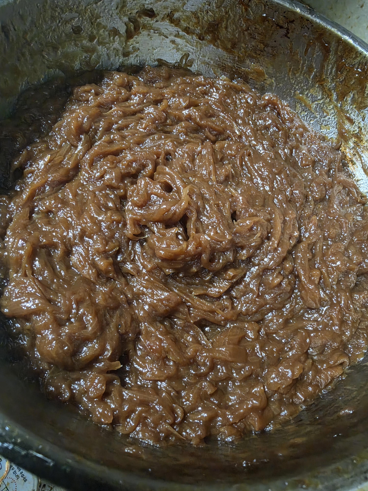

노코팅 스뎅팬으로 하나도 안타고 저색깔냈음 ㅋㅋㅋㅋ
이제 카레 만들 수 있을듯 ㅋㅋㅋㅋ 저녁만들어야지ㅋㅋ

노코팅 스뎅팬으로 하나도 안타고 저색깔냈음 ㅋㅋㅋㅋ
이제 카레 만들 수 있을듯 ㅋㅋㅋㅋ 저녁만들어야지ㅋㅋ
질퍼ㅡ언 하네
이제 저걸 비닐백에 넣고 평평하게 만든 다음 냉동실로 직행하면 나중에 조금씩 뜯어먹기 좋음
솔직히 저렇게 하면 맛은 졸라 있음.시간과 가스비가 문제지.
예전에 빽때문에 해봤었는데
저까지 만드는거 진짜 빡노가다던데
힘들었겠네
이건 그냥 캬랴멜이라해도 인정해준다
똥이잖아
이제 치즈 듬뿍넣은 양파스프 하는거지??
흠 내가 언제싼거지
내똥보다 똥같이 생겼네
줜나 고수네
이러면 개맛있는건 맞음 시간하고 노력이 쩔어서글치 ㄹㅇ 맛은 좋음
화장실
똥을
두시간 넘게 걸렸겠네 ㅠㅠ 대단

카레(향신료로 맛 덮기)하기 아깝다아
수프 끓여먹쟈 제발
해병
-븃-
도토리묵아닌가
흐으으으으읍
이거 양파잼아님? 식빵구어서 저거올려먹어바라 디진다
와 씨바 좆고수 이걸 안 태워먹네
나도 만들수 있는데 히히 부랄데일까봐 못하게써